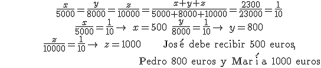
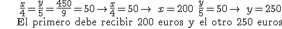
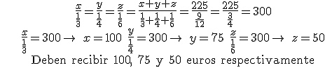
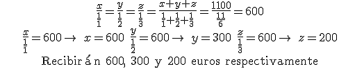

Repartos proporcionales
1. José, Pedro y María invierten 5000, 8000 y 10000€ respectivamente para montar una compañía. Tras un año la compañía ha obtenido 2300€ de beneficio. ¿Cuánto dinero debe recibir cada socio?

2. Dos obreros ganan 450€ por un trabajo. Si uno de ellos trabajó 4 días y el otro 5, ¿cuánto debe recibir cada uno?

1. El jefe de una compañía quiere distribuir 225€ de incentivos entre sus empleados. El primero ha tenido 3 retrasos este mes, el segundo 4 y el tercero 6. ¿Cuánto debe recibir cada uno?

2. Esta carrera tiene un premio de 1100€ para el primero, el segundo y el tercero que debe distribuirse de manera inversamente proporcional a la posición ocupada. ¿Cuánto recibirán los tres primeros?

Ejercicios
1. Tres amigos compran un billete de lotería de 15 €, el primero pone 6 €, el segundo 4 € y el tercero 5 €. Han ganado 3 000 € con ese billete, ¿cuánto debe recibir cada uno?
2. Un padre decide distribuir su fortuna de modo proporcional a la edad de sus hijos. Cuando muere tiene 300 000 € y sus hijos 20 y 30 años. ¿Cuánto debe heredar cada uno?
3. Dos camareros recibieron de propinas 100 € el último mes y deciden distribuirlo de manera inversamente proporcional al número de días que faltaron al trabajo. Si Pablo faltó dos días y Nora tres, ¿cúanto debe recibir cada uno?
Soluciones: 1) 1200, 800 y 1000 €; 2) 120 000 y 180 000 €; 3) Pablo 60 € y Nora 40 €
Obra publicada con Licencia Creative Commons Reconocimiento No comercial Compartir igual 4.0